Thay Excel và chứng từ rời bằng một chuỗi dữ liệu khép kín:
từ khách hàng, lệnh điều xe, xe và tài xế đối tác, đến chứng từ,
đối soát và bảng kê tháng — không nhập lại nhiều lần.
173,9 trTổng cước tháng 8/2026 (demo)
31 lệnhĐang quản lý trên hệ thống
15 kháchHồ sơ vận tải Bắc Bộ
17 màn hìnhĐiều phối · Kế toán · Quản lý
Chuỗi nghiệp vụ khép kín
Một lệnh điều xe được tạo từ đầu trở thành dữ liệu gốc cho theo dõi chuyến, cước và bảng kê khách hàng.
Khách hàngLệnh điều xeXe + tài xếChứng từCướcĐối soátBảng kê tháng
Ứng dụng desktop Windows, giao diện tiếng Việt, dữ liệu tập trung trên SQL Server.
Ảnh trong tài liệu này chụp từ bản chạy thật với dữ liệu minh họa tuyến Bắc Bộ.
1. Đăng nhập & phân quyền
Mỗi người dùng có tài khoản riêng. Quản lý thấy toàn bộ menu; kế toán chỉ thấy các màn được cấp quyền Xem / Thêm / Sửa / Xóa / In.
Quản lý / Giám đốc: toàn quyền, khóa lệnh, khóa bảng giá, quản lý người dùng và tham số hệ thống.
Kế toán: lệnh, đối soát, bảng kê, danh mục, tra cứu, dashboard và báo cáo theo từng cờ quyền.
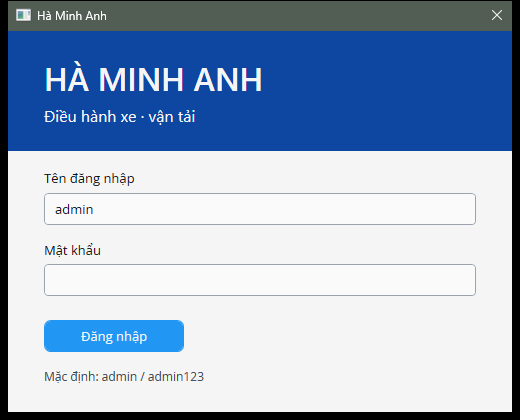
Màn hình đăng nhập — phiên làm việc gắn với người dùng, không dùng chung một máy tính vô danh.
2. Dashboard cước vận chuyển
Ban điều hành nhìn ngay sức khỏe tháng: tổng cước, số chuyến chưa / đã đối soát, chuyến chờ chứng từ — rồi khoan xuống theo khách và theo xe.
Chọn tháng / năm và làm mới số liệu.
Bốn chỉ số: tổng cước tháng, chưa đối soát, đã đối soát, chờ chứng từ.
Bảng theo khách hàng (số chuyến, doanh thu) và theo biển số (số chuyến, doanh thu, tuyến đã chạy).
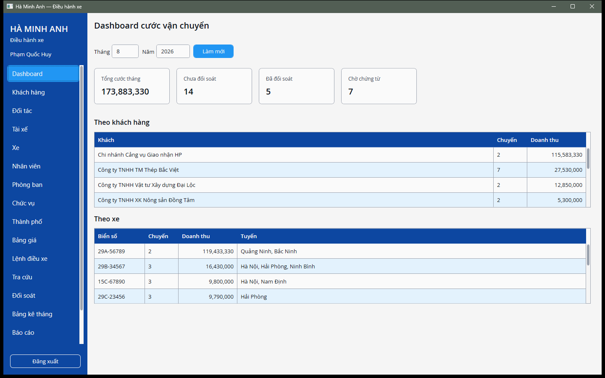
Dashboard tháng 8/2026 — 173,9 triệu đồng cước, 14 chuyến chưa đối soát, 7 chuyến chờ chứng từ.
3. Khách hàng
Hồ sơ khách thanh toán: mã, tên công ty, MST, địa chỉ, người liên hệ, điện thoại, email, thành phố và kế toán phụ trách.
Tìm theo mã, tên, địa chỉ, MST, khoảng ngày.
Thêm / xem / sửa / xóa; xuất Excel danh sách.
Gắn kế toán phụ trách từng khách — phục vụ đối soát và bảng kê.
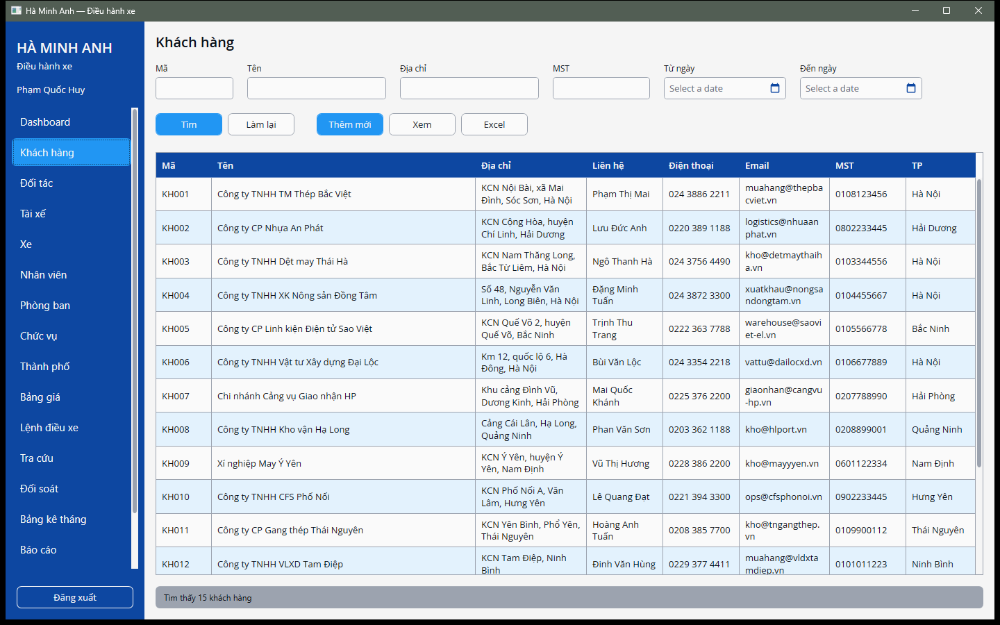
15 khách hàng minh họa — Thép Bắc Việt, Nhựa An Phát, Dệt may Thái Hà…
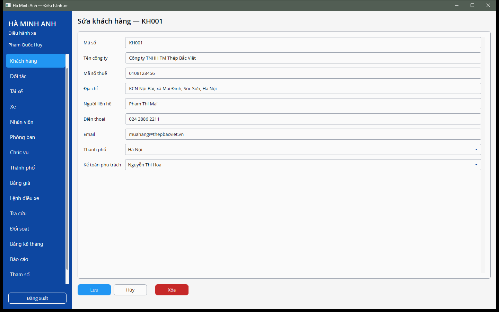
Form chi tiết KH001 — Công ty TNHH TM Thép Bắc Việt, kế toán Nguyễn Thị Hoa.
4. Đối tác cung cấp xe
HMA điều xe của nhiều công ty đối tác. Hồ sơ đối tác gồm mã, tên, MST, địa chỉ, liên hệ — tài xế và xe được gắn về từng đối tác.
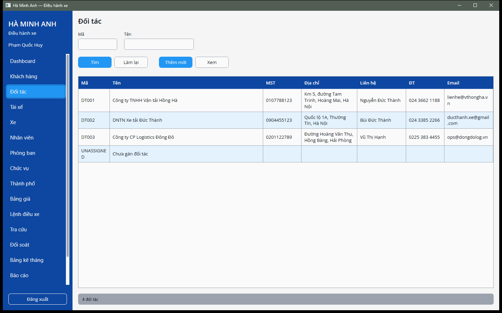
Danh mục đối tác vận tải — nguồn xe và tài xế không thuộc HMA.
5. Tài xế & xe
Hồ sơ tập trung: CCCD, ngày sinh, số điện thoại, biển số, loại xe, tải trọng — và lịch sử chuyến ngay trên form chi tiết.
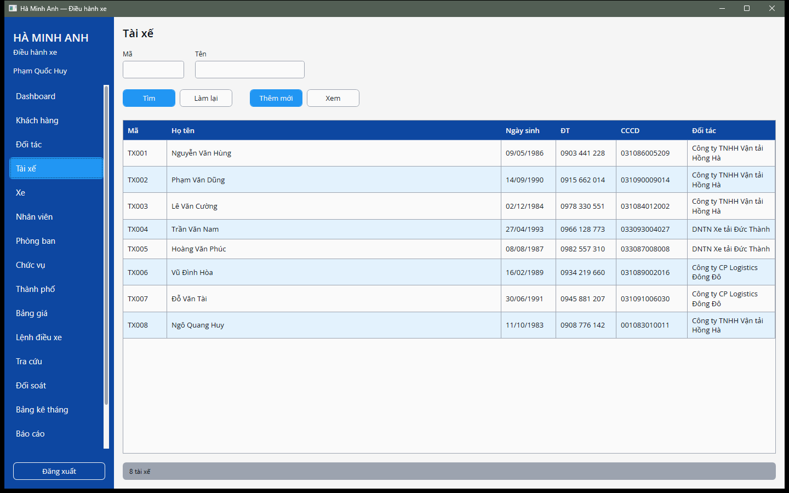
8 tài xế thuộc các đối tác Hồng Hà, Đức Thành, Đông Đô…
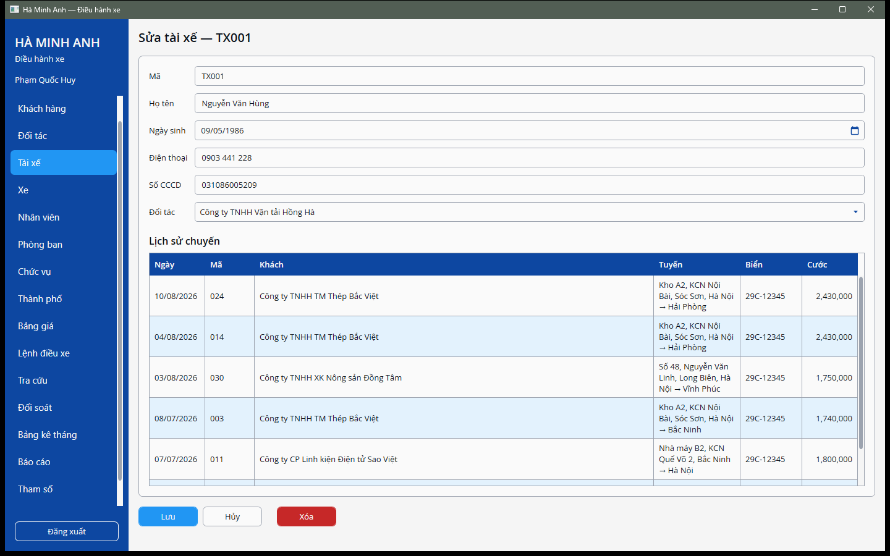
TX001 Nguyễn Văn Hùng — lịch sử chuyến (ngày, mã lệnh, khách, tuyến, biển, cước).
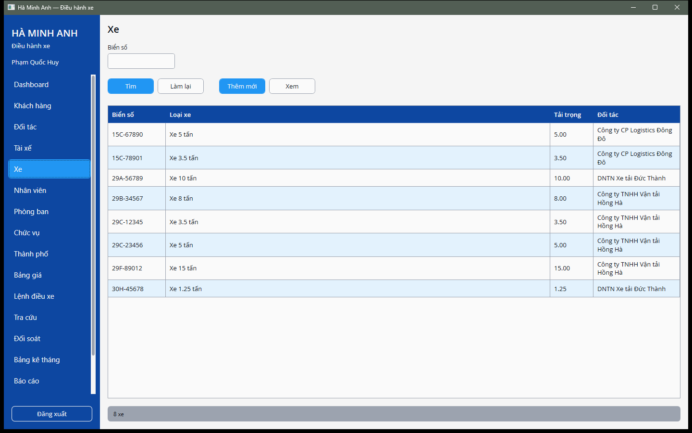
8 xe từ 3,5 tấn đến 15 tấn, tìm nhanh theo biển số; mỗi xe có lịch sử chuyến tương tự tài xế.
6. Tổ chức nội bộ & danh mục tuyến
Nhân viên HMA (phòng ban, chức vụ), thành phố lấy/giao — dùng cho combo trên lệnh và báo cáo, không nhập tự do mỗi lần.
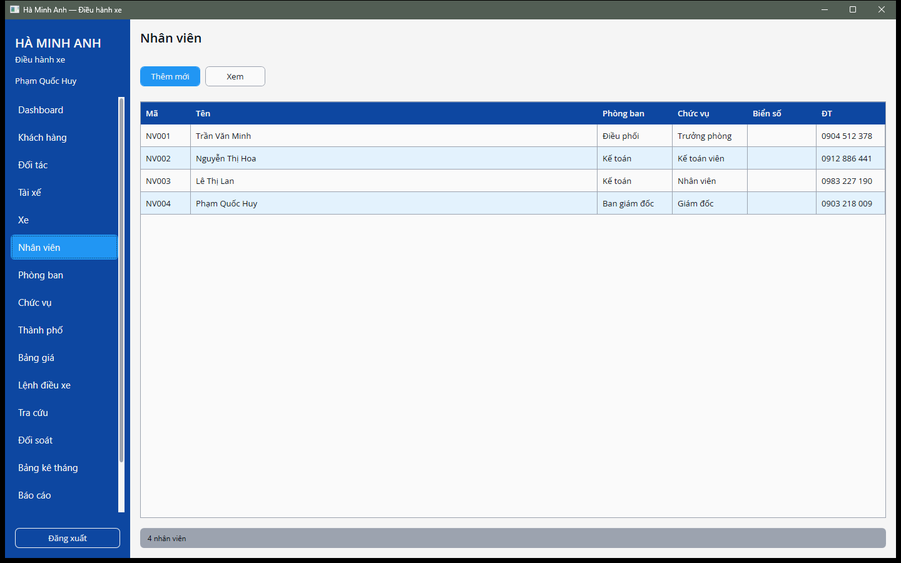
Nhân viên — phòng ban, chức vụ, biển số nếu có.
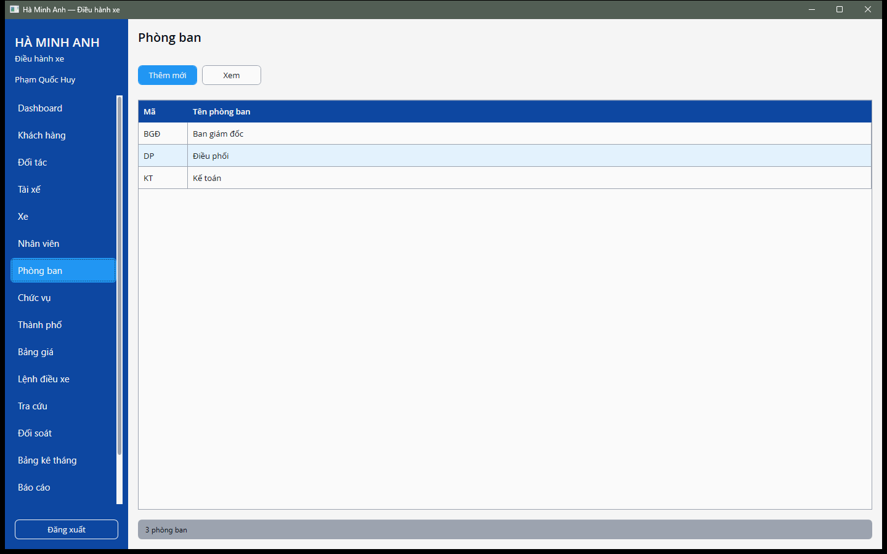
Phòng ban.
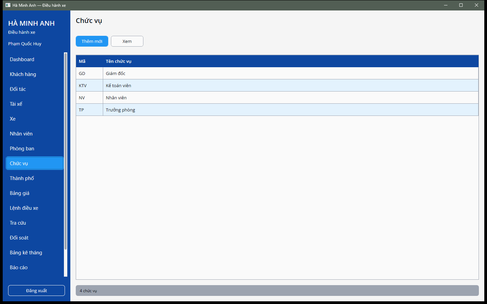
Chức vụ.
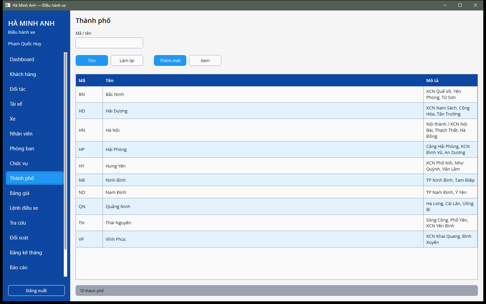
Thành phố lấy hàng / giao hàng.
7. Bảng giá
Cước theo tuyến × loại xe. Có bảng giá chung và bảng giá riêng từng khách, hiệu lực từ–đến. Khi tạo lệnh, hệ thống có thể lấy đơn giá đã thiết lập. Quản lý khóa bảng giá kèm lý do.
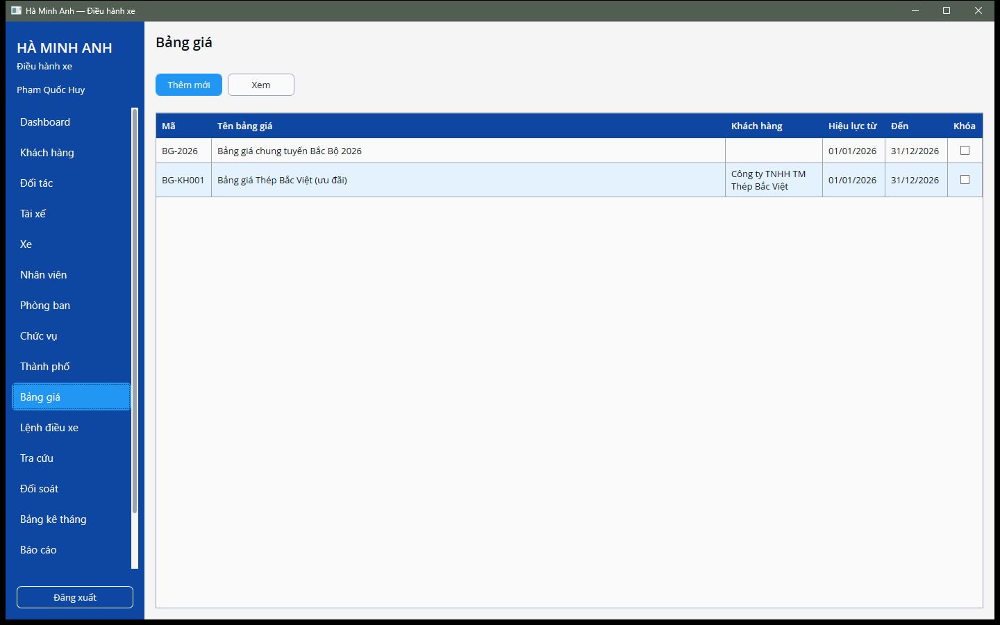
BG-2026 bảng giá chung tuyến Bắc Bộ; BG-KH001 ưu đãi riêng Thép Bắc Việt — cả năm 2026.
8. Lệnh điều xe — chức năng trung tâm
Tiếp nhận yêu cầu, phát hành lệnh, phân công xe/tài xế, theo dõi trạng thái, tính cước, đính kèm chứng từ và in.
Tìm: số LDX, từ–đến ngày, khách, biển số, loại xe, điểm giao, trạng thái lệnh, trạng thái đối soát, khoảng tiền.
Chi tiết: người gửi (khách thanh toán) / người nhận, giờ lấy hàng, xe, tài xế, lưới hàng hóa, đơn giá / phụ phí / phát sinh / tổng / bằng chữ.
Khách vãng lai: thêm nhanh người gửi/nhận mã VL- ngay trên lệnh.
Chứng từ: đính kèm lệnh, biên bản giao hàng, hóa đơn và tài liệu khác; mở file từ lệnh.
Quy trình: tính cước từ bảng giá, hoàn thành, khóa lệnh (quản lý), in một lệnh; Excel cước; in tổng hợp theo ngày / tháng / theo khách.
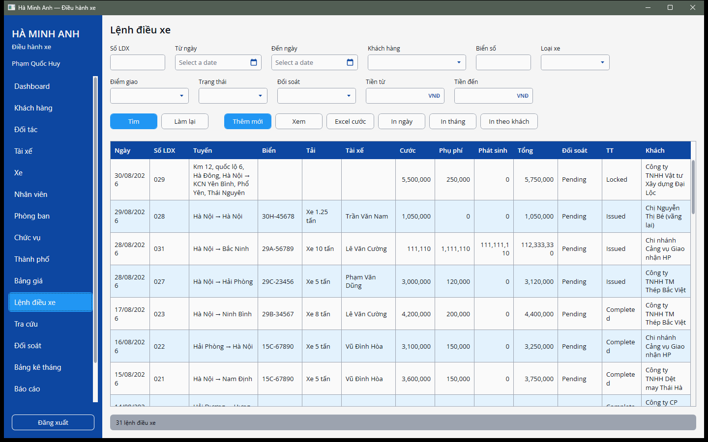
31 lệnh — tuyến, biển, tải, tài xế, cước, phụ phí, phát sinh, đối soát, trạng thái, khách.
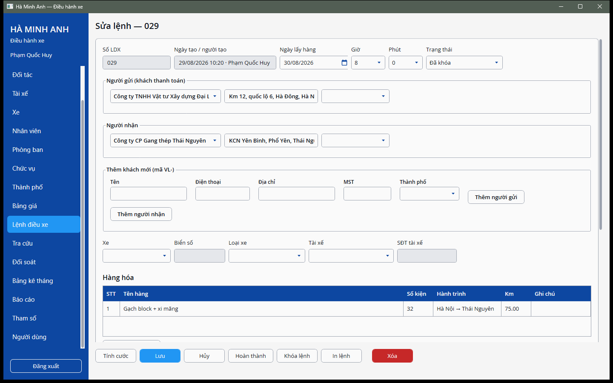
Sửa lệnh 029 — Đại Lộc → Gang thép Thái Nguyên, gạch block + xi măng, lệnh đã khóa.
9. Tra cứu chuyến
Một ô: số lệnh điều xe hoặc biển số. Kết quả là lịch sử chuyến; bấm Mở lệnh để nhảy thẳng vào chi tiết.
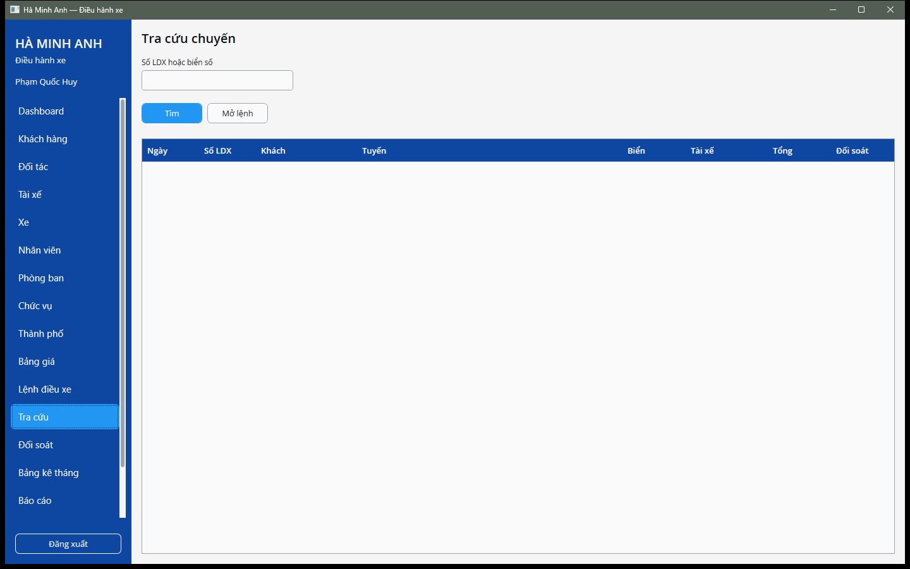
Tra cứu — nhập số LDX hoặc biển số, Tìm, rồi Mở lệnh.
10. Đối soát
Trước khi vào bảng kê tháng, kế toán kiểm checklist: chứng từ giao hàng, đúng tuyến, đúng đơn giá, phụ phí, phát sinh, số tiền cuối. Xác nhận chuyển trạng thái Chưa đối soát → Đã đối soát. Mọi thay đổi cước / xe / tuyến / trạng thái được ghi lịch sử.
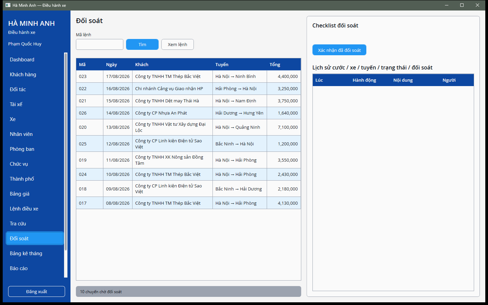
10 chuyến chờ đối soát — checklist bên phải, lịch sử thay đổi theo từng lệnh.
Chuyến thiếu chứng từ hoặc chưa xác nhận cước không được đưa tự động vào bảng kê chính thức.
11. Bảng kê cước theo tháng
Đầu ra quan trọng nhất: chọn khách hàng + tháng/năm → hệ thống tổng hợp các chuyến đã hoàn thành và đã đối soát. Xuất PDF để gửi khách, Excel để kế toán kiểm tra.
Người dùng: login, tên hiển thị, mật khẩu, cờ Quản lý; lưới quyền Xem / Thêm / Sửa / Xóa / In theo từng màn.
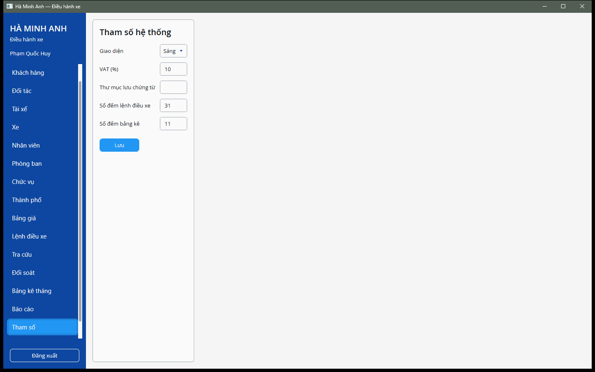
Tham số — VAT 10%, bộ đếm lệnh 31, bộ đếm bảng kê 11.
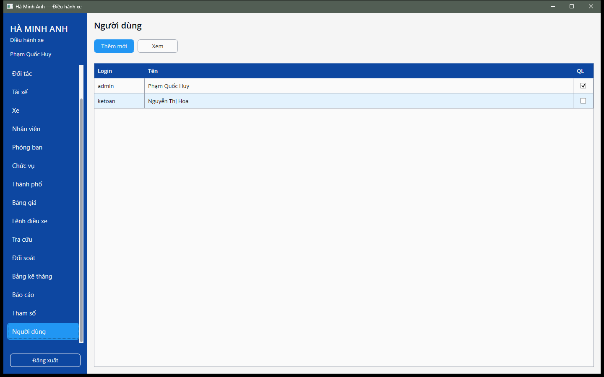
Hai vai trò minh họa: admin (quản lý) và ketoan (kế toán, không cờ QL).
Kế toán
Lập và sửa lệnh, đối soát cước, xuất bảng kê, tra cứu, xem dashboard / báo cáo theo quyền được cấp.
Quản lý / Giám đốc
Toàn bộ dữ liệu, khóa lệnh và bảng giá, phân quyền người dùng, tham số hệ thống.
Kết quả mang lại
Quản lý tập trung — lệnh, xe, tài xế đối tác, chuyến và cước trên một hệ thống.
Giảm sai sót — hạn chế nhập trùng, thất lạc lệnh, nhầm xe / tài xế / tuyến / cước.
Đối soát nhanh — chuyến gắn chứng từ và lịch sử sửa cước.
Bảng kê tháng tự động — từ lệnh đã hoàn thành và đã đối soát, không gõ lại Excel.
Phiên bản giới thiệu này là ứng dụng desktop (Windows). Thu tiền / chi tiền / hóa đơn VAT sẽ bổ sung ở giai đoạn sau, tái sử dụng cùng nền dữ liệu lệnh và bảng kê hiện có.